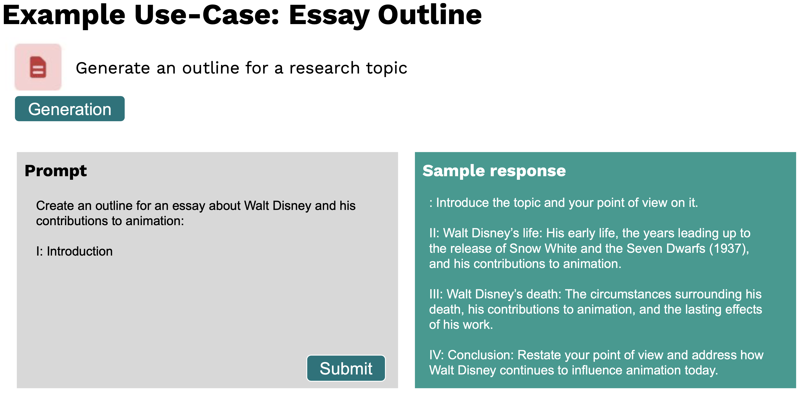
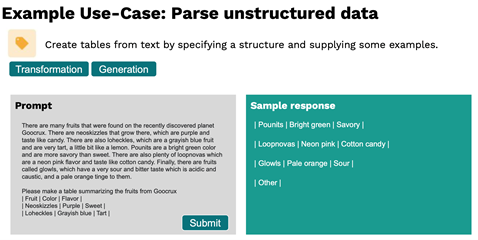

First off a bold statement: We want everybody to make use of AI and not AI to make use of everybody.
We at TUM.ai believe that understanding the basics of artificial intelligence is of high importance for everybody in today’s society. Therefore the following article aims to explain the basics of AI models that work on natural language - specifically for non-experts.
After you've read this article you'll know the basics of the world’s most powerful AI model “GPT-3” and understand why the adoption of this artificial intelligence algorithm can create a lot of opportunities in various industries. Further, we will explain how you can personally leverage this state of the art technology.
Click on the content directory below to jump straight to certain chapters of this blog post.
Note that during this article you will find some sections that you can fold out that provide more detailed information about the topic. You can expand them by clicking on the orange text.
Natural Language Processing in a Nutshell
An example of Natural Language AI in our everyday live is the prediction of the next word on many of our smartphone keyboards. There your written sentences are used by the model to suggest the next most likely word.
Natural Language Processing(NLP) is a subfield of linguistics, computer science and AI concerned with processing and analysing human language. Imagine a Natural Language AI to be like a software program where text is entered, processed in a specific way and then some sort of text is returned(simplification).
Translation from language A to language B (e.g. English to French, but also translating one programming language to another e.g. Java to Python)
Classifying documents for example by
political view
sentiment (positive, neutral, or negative customer reference)
spam within e-mail applications
Click here to expand insights about two important technical progressions that were important for the development of GPT-3.
First, in December 2017 the so called transformer architecture was developed, which revolutionized how text can be processed by the computer and GPT-3 is based upon. Within the transformer architecture the model can learncontext-sensitive-associations through a novel technology called attention [Vaswani et al. (2017) Attention is all you need]. For example look at this senctence: “Steve eats an apple because it tastes good.” Attention is measured by a value that indicates how relevant a word is in relation to another word. It and the apple refer to eachother and therefore represent one association.
These attention based operations are not sequence dependent and can be computed in parallel.
This explains the superiority of the transformer architecture compared to previous methods, which weren't able to run operations in parallel or incapable of looking at the whole input text at once. Since transformer architectures build an internal representation of language during training, they are often also called “language models”.
Second, in recent years, self-supervised learning was refined a lot: Language models were trained by first masking out (parts of) words and then predicting these missing words in different sentences. This lead to the concept of generative pre-trained transformers (GPT). This allowed researchers to achieve similar results without the need for hand-labeled data, which is expensive and time consuming to create. This was a major breakthrough because the availability and generation of sufficient hand-labeled data was often a hurdle, but text on the internet is near infinite.
What's the Deal with GPT-3 and what can it do?
GPT-3 (generative-pretrained-performer 3) is a recent advancement in the field of artificial intelligence.
It performs equally or better on avariety of different taskscompared to the state of the art models (trained for a specific task only) in the respective fields. Building on their previous efforts (GPT-1 and GPT-2), OpenAI released their beta version in the summer of 2020. While most other language models are designed for a single task, GPT-3 provides a general-purpose “text in, text out” interface, which makes it possible to apply it to virtually any language task.
Examples for the tasks that GPT-3 is able to take on include:
Summarization with different output
Turn interesting books into asummary
Summarize long articles by providing key concepts
Create spreadsheets tables that extract knowledge pieces from long textsby specifying a structure and supplying some examples
Translate difficult texts into simpler texts(e.g. for a 2nd grader)
Coding tasks
Describe a user interface and get code that produces the desired interface right away
Convert JavaScript to Python
Classifying items into categories via example
Classify the sentiment (negative, neutral, positive) of short texts like posts and tweets
Classify the political view of articles
Creating longer texts on specific topics without much input
Create study notes on a given topic
Generate an outline for a specific research topic or essay
Generating multiple versions of creative texts to describe things
Generate an advertisement for a product description
Propose product names for shortly described products
Answering questions
Answer universal questions
Provide company information for financial metrics
Facilitate a conversation with an AI assistant regarding various topics (chat-bot)
Note that a lot of these tasks can be achieved by GPT-3 without or very little input.
Given any text input or task you provide to GPT-3, the interface will return a text completion, attempting to match the pattern you gave it. You can easily “train” it by typing just a few examples of what you’d like it to do into the interface; its success generally varies depending on how complex the task is.

Source:[OpenAI (2020) OpenAI API]
In the following video you can observe the GPT-3 interface in action. It provides an example for the the creation of an essay outline about Walt Disney. The bold text in the video is the input provided to the model.
Another capacity of the user interface is that parameters can be adjusted to better serve the purpose of the current task. Figuratively speaking, it can even be configured to provide more diverse output, which can be quite handy to brainstorm texts with a creative purpose (click here to understand how that works).
This can be done by increasing the so called “temperature” parameter. A high temperature value means the model will brainstorm by providing various outputs that differ more to eachother compared to a very deterministic answer that would be achieved by a low “temperature”.
For example, in the following video this approach has been pursued to obtain a short advertising text.
One of the most practical advantages of GPT-3 is its ability to generate valid text output with a multitask interface, by using very little or no input data.
To summarize, the main benefits of GPT-3 in simple terms are that it has been trained on a very large part of the internet, it can be used as a general-purpose out-of-the-box model for a vast range of different tasks and it can be very easily taught to learn another task by showing it simple examples without the need to write a single line of code.
Inspiring GPT-3 Usecases in the Context of the Makeathon Tracks
Still hard to grasp what exactly GPT-3 is useful for?
In the following, we present for every track of the Makeathon initial and inspirational use cases. But this is just food for thought. There are no limits. Think of industry specific problems and opportunities that could be solved via GPT-3 based applications. This is your chance to be at the forefront of cutting-edge artificial intelligence and actively shape how it will be used in your domain!
1. Legal Tech (Law)
The representation of clients in court will not be automated. But along the way, a lot of repetitive and text-based tasks can be. Having the right knowledge and especially knowing where to find it fast is key for contract laws as well as the legal industry in general. Future practioners will have a set of digital tools at hand that help them to support their clients more efficiently, allowing them to focus on their core competencies. The following list provides use cases that pose opportunities to apply language models in law:
Automatic generation of contracts with low complexity (e.g. non-disclosure-agreements)
Summarizing case information efficiently
Chatbots that can give nonbinding legal advice (question-and answer tools)
Extracting summaries on parts of the law (e.g. tax fraud) to get fast access to legal texts on specific topics
Fast research about subjects that are associated with the case (e.g. extract the tax rates for different countries)
Study by Deloitte that introduces various additional usecases within legaltech
2. Healthcare
AI already plays a crucial role in the healthcare industry. Tasks like automating surgery and computer vision, e.g., detecting cancer in CT scans are well known. But healthcare providers, pharmaceutical companies and biotech firms have huge amounts of unstructured text data in their databases and documents. Information is hidden in text-based and partly unstructured patient datasets, awaiting to be parsed and converted into actual and accessible insights. Opportunities for GPT-3 usecases in the healthcare domain are:
Chatbots that can answer basic health related questions (e.g. above which temperature you have fever)
Free up physicians from the manual work with electronic health record systems by leveraging summarization tools to document important health related incendents of the patient
Automatically generate aggregated medical reports from electronic patient record systems to provide the doctor a quick overview of health history of the patient to better be able to consult the patient in the context of incidents and symptoms from the past
A great example in this domain is the AI-based service provided by Babylon Health, which learns from anonymised, aggregated medical datasets and the conultation notes that clinicians make to improve decisionmaking of practitionsers
A very well-known NLP task is Sentiment Analysis or Opinion Mining. Algorithms nowadays are capable of predicting your sentiment in a piece of writing, without seeing your facial expression or body language, only taking a sequence of words into account. This can include reviews of movies, books, or other products and their attributes to better understand the consumer. Editorial or political texts and social media posts can convey subjective feelings towards a topic or brand, helping to analyze potential customers. Application-wise, Sentiment Analysis is heavily used in marketing and politics, evaluating consumer and public sentiment. Usecases to apply NLP AI in this space are:
Automate customer interaction with chatbots that provide customer service based on answers that helped solving previous problems of customers
Measure the brand reputation of your company by classifying the sentiment of the comments within your marketing channels as an indication to steer your public realtions
Automatically generate individual product configurations based on customer preferences
4. Knowledge Management
When working at large enterprises, most of the company’s total knowledge is spread out in thousands of different sub-units, entities and locations. Text to text models can help you automatically process large amounts of unstructured business data (like presentations, spreadsheets, and content saved within the intranet). Such a procedure can provide accessible insights for employees. Especially in large consortiumslearning effectscan make huge differences if one business unit is able to efficiently learn from the insights of the other one (obviously identity and access management has to support such procedures to protect confidential information). However, there are a lot of opportunities for language AI usecases within this domain:
Turn interesting books and email communication intoinsightful summaries, without losing information
As you can see, language algorithms provide the opportunity to solve relevant problems in a lot of different industries.
How was GPT-3 developed?
Architecture and Size
Regarding the Architecture there are little conceptual changes to GPT-3s predecessor GPT-2(Warning: the architecture of language models is quite complex. So you can go down a deep rabbit whole until you understand everything. There are many blog posts out there explaining the concepts, but a good starting point might be the following simplified description of The GPT-3 Architecture, on a Napkin.) butthe underlying structure is scaled up a lot in terms of size. The GPT-2 paper showed already that an increase in model size leads to an increased performance. While GPT-2 had 1.5 Billion parameters which is already impressive, GPT-3 is more than factor 100 bigger with stunning 175 Billion parameters which is also 10 times bigger than the previously largest NLP model (Turing NLG) with 17 Billion parameters. This unimaginable size is where GPT-3's big innovation lies in respect to its predecessor GPT-2.
In contrary to established NLP models GPT-3 does not require extra training to finetune for certain tasks. Therefore GPT-3 is able to solve different kind of problems without individual training for many use cases. The AI can do so called few-shot learning where it is able to solve tasks after showing it a limited number ofexample tasks (Note: By “showing example tasks to the model” we do not mean training the model. No actual supervised learning is happening here. It is actually sufficient just to show the model a very small set of examples in the form of textual input.) or even only a single example task (one-shot learning). For certain usages it is even able to solve tasks without needing an example but only a definition of the task (zero-shot learning). The greatnumber of parameters is one of the reasons for this impressive technique offew-shot learning. The game changer, is that few-/one-/zero-shot can be performed without the need for vast amounts of labelled data.
GPT-3 has been trained on a very large part of the internet.
Dataset
You can guess that a lot of data is required to properly train such a huge model (The more parameters a deep learning model has the more data points are required to let those paramerets converge to appropiate values. You can imagine a big model with not enough training data like a system of equations with less equations than unknowns.). In fact, GPT-3 was trained on remarkable large parts of the internet. The main part of the dataset is contributed by a filtered version of the common crawl set which was created by collecting massive amounts of web pages since 2011. The rest of the dataset consists of another web text collection, a lot of books and Wikipedia. A stunning sidefact about the size of the dataset is that Wikipedia contributes only to 3% of the whole set. Due to this immense amount of human produced natural language, GPT-3 performs so well as NLP AI.
Access Limitation
Since a finalized version of GPT-3 is yet to be released and only a closed beta is available the access to this software is vastly restricted. As of the early summer 2020 OpenAI provides for a limited number of institutions - including TUM.ai - access to their innovative tool.
How can you personally leverage GPT-3?
During the GPT-3 Makeathon by TUM.ai you have the opportunity to get access to this state of the art technology to realize an idea or prototype that solves an important problem.
To use GPT-3 there are mainly two options:
Use the GPT-3 user interface. The user interface of GPT-3 is easy to use and requires NO programming skills. Therefore, you don't need any experience in artificial intelligence and or computerscience to try out GPT-3.
Integrate GPT-3 into a web-app via theAPI(Application Programming Interface). To integrate GPT-3 into your custom user interface, you can also use the OpenAI API to programmatically access GPT-3. If you don't have experience with building web apps: We got you covered as we'll offer a workshop just about that.
No matter which way you'll go: We will make sure that you have the necessary knowledge to successfully participate in the Makeathon (stay tuned for further information about educational opportunities before the Makeathon)!
So if you want the unique chance to work with this state of the art AI architecture, sign up for the GPT-3 Makeathon now.